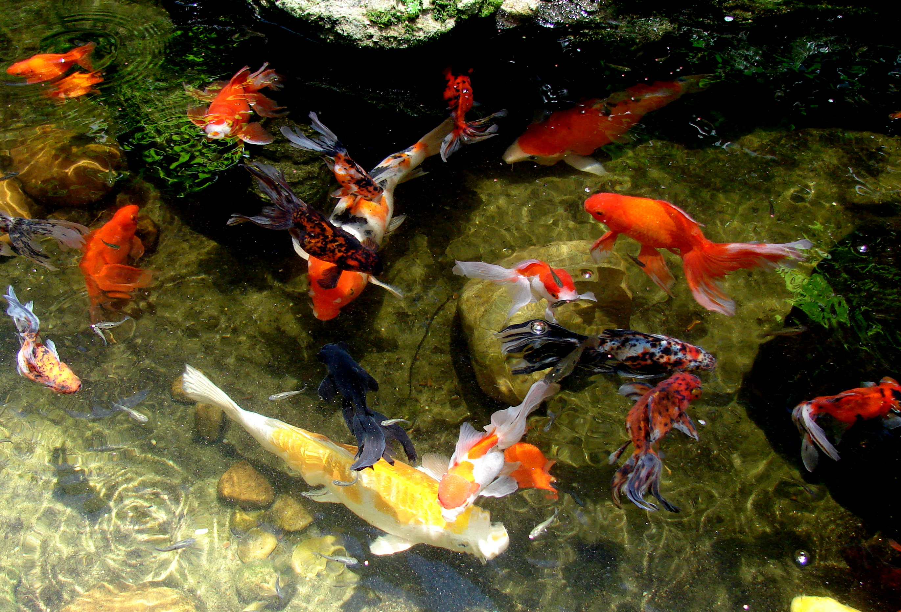
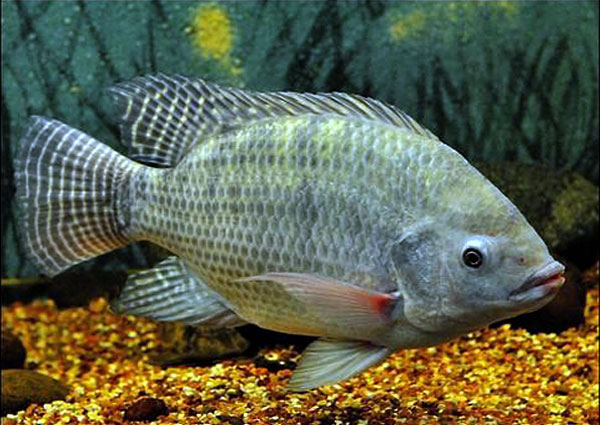
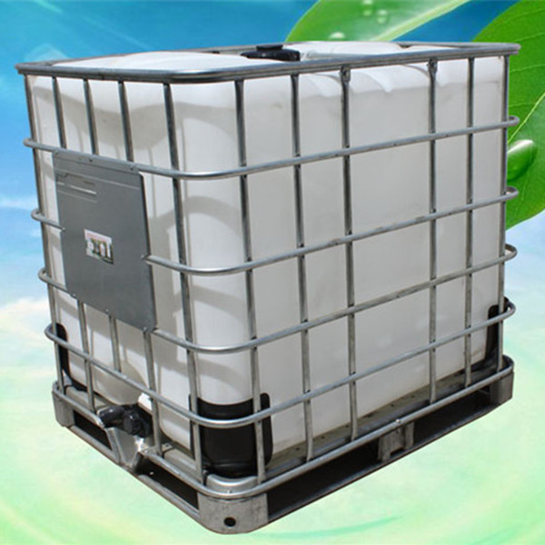
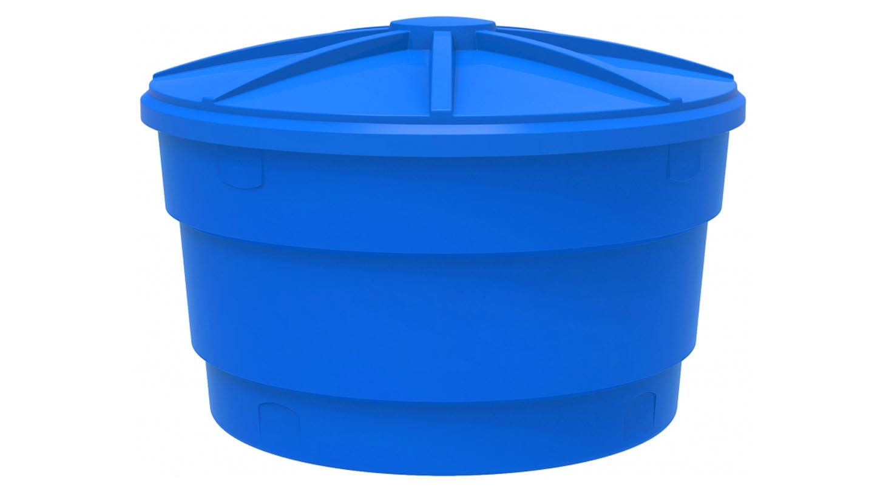
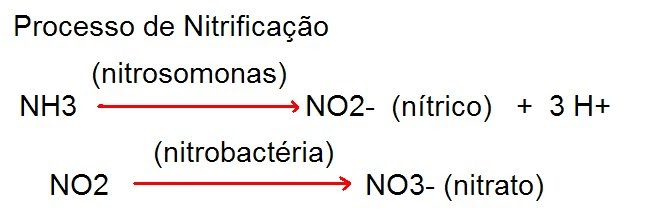
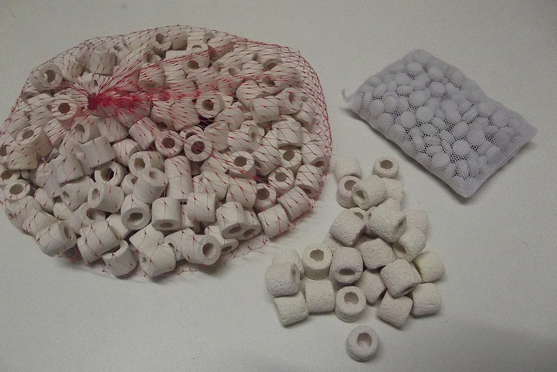
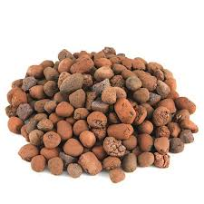

A Arte de Criar Peixes na Aquaponia
A criação de peixes (Aquicultura) é o ponto de partida. Embora seja uma arte milenar, para a Aquaponia focamos no essencial: manter a fauna saudável para alimentar as plantas. Utilizamos preferencialmente peixes de água doce.

Ornamentais: Carpas e Kinguios
Consumo: Tilápia (A mais recomendada)Estrutura: Do IBC à Caixa d'água
Você pode utilizar diversos recipientes: piscinas, lagos ornamentais ou banheiras. No entanto, os dois modelos abaixo dominam os sistemas residenciais pela praticidade e custo.

Tanque IBC (Padrão Internacional)
Caixa d'água (Mais comum no Brasil)O Segredo do Sucesso: A Ciclagem
Nunca coloque peixes diretamente na água nova (especialmente se for encanada, devido ao cloro). Sem bactérias, os dejetos e restos de ração produzem Amônia tóxica.
O Ciclo do Nitrogênio é o processo de 30 a 50 dias onde bactérias transformam Amônia em Nitrito, e depois em Nitrato (o adubo das plantas).

Monitore seu Tanque como um Profissional
Você não consegue ver a amônia, mas pode medi-la. Estes são os kits essenciais para a fase de ciclagem:

Mídias Biológicas
As bactérias precisam de uma "casa". Embora no tanque elas fiquem nas paredes, é vital inserir Mídias Cerâmicas ou Argila Expandida nos filtros para acelerar a colonização.

Anéis de Cerâmica (Alta Performance)
Argila Expandida (Custo-Benefício)